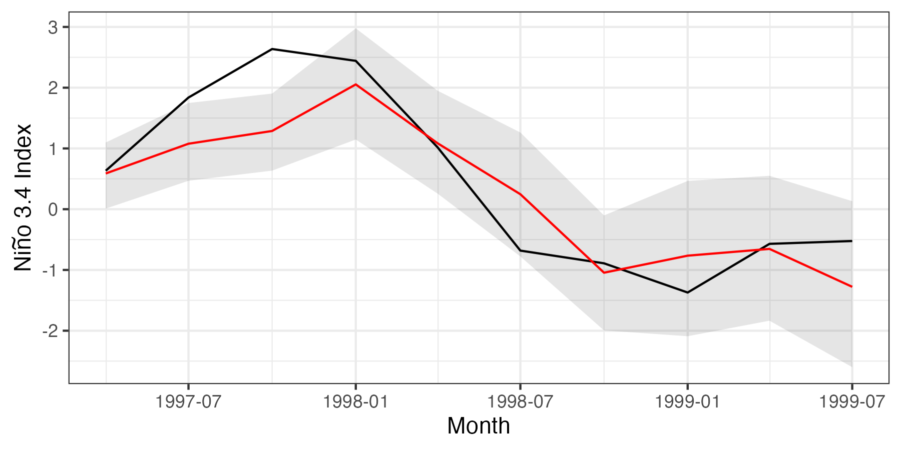
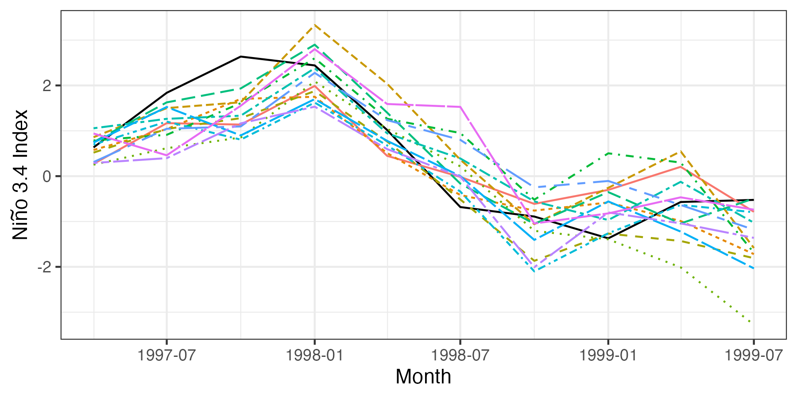

library("ggplot2")
library("dplyr")
library("STRbook")
library("tidyr")Appendix F — Case Study: Quadratic Echo State Networks for Sea Surface Temperature Long-Lead Prediction
Recall from Section 5.4 that recurrent neural networks (RNNs) were developed in the engineering and machine-learning literature to accommodate time-dependent cycles and sequences as well as the concept of “memory” in a neural network. But, like the statistical GQN (also discussed in Section 5.4), RNNs have an extremely high-dimensional parameter space and can be difficult to fit. In contrast, the echo state network (ESN) is a type of RNN that considers sparsely connected hidden layers that allow for sequential interactions, yet specifies (remarkably) most of the parameters (“weights”) to be randomly generated and then fixed, with only the parameters that connect the hidden layer to the response being estimated (see the overview in Jaeger (2007)). We consider a modification of the ESN in this case study. Note that although the models presented here are relatively simple to implement, the notational burden and (especially) the machine-learning jargon can take some getting used to.
A simple representation of an ESN is given by the following hierarchical model for data vector \(\mathbf{Z}_t\) (assumed to be \(m\)-dimensional here):
\[ \mathbf{Z}_t = g_o(\mathbf{V}\mathbf{h}_t), \tag{F.1}\]
In the data model (Equation F.1) and the process model (Equation F.2), \(\mathbf{h}_t\) is an \(n\)-dimensional vector of latent (“hidden”) states, \(\mathbf{x}_t\) is a \(p\)-dimensional input vector, \(\mathbf{V}\) is an \(m \times n\) output-parameter weight matrix, \(\mathbf{W}\) is an \(n \times n\) hidden-process-evolution-parameter weight matrix, \(\mathbf{U}\) is an \(n \times p\) input-parameter weight matrix, and \(g_o(\cdot)\) and \(g_h(\cdot)\) are so-called “activation functions” (e.g., identity, softmax, hyperbolic tangent). The hidden-state model Equation F.2 is sometimes called a “reservoir.” This reservoir is key to this modeling framework in that the parameter weight matrices in Equation F.2, \(\mathbf{W}\) and \(\mathbf{U}\), are sparse (only 1–10% of the parameters are non-zero) with non-zero elements chosen at random and fixed (for details, see the example that follows). This means that only the output weights (in \(\mathbf{V}\)) are estimated, substantially reducing the estimation burden. In most applications, \(g_o(\cdot)\) is the identity function, and \(\mathbf{V}\) can be estimated with regression methods that include regularization, such as a ridge regression or a lasso penalty (see Note 3.4). These models work surprisingly well for forecasting central tendency and classification, but they are limited for inference and uncertainty quantification. Notice that there are no error terms in this model!
McDermott & Wikle (2017) modified the basic ESN algorithm for use with spatio-temporal data to include quadratic nonlinear outputs, so-called “embedding inputs” (see below), and reservoir parameter uncertainty by considering an ensemble (bootstrap) sample of forecasts. Their quadratic echo state network (QESN), for \(t=1,\ldots,T\), is given by:
Response: \[ {\mathbf{Y}}_t = {\mathbf{V}}_1 {\mathbf{h}}_t + {\mathbf{V}}_2 {\mathbf{h}}^2_t + {\boldsymbol{\epsilon}}_t, \quad \textrm{for} \quad {\boldsymbol{\epsilon}}_t \; \sim \; Gau({\mathbf{0}},\sigma^2_\epsilon \mathbf{I}); \tag{F.3}\]
Hidden state:
Parameters: \[ {\mathbf{W}} = [w_{i,\ell}]_{i,\ell}: w_{i,\ell} = \gamma^w_{i,\ell} \; Unif(-a_w,a_w) + (1 - \gamma^w_{i,\ell}) \; \delta_0, \tag{F.5}\]
\[ {\mathbf{U}} = [u_{i,j}]_{i,j}: u_{i,j} = \gamma^u_{i,j} \; Unif(-a_u,a_u) + (1 - \gamma^u_{i,j}) \; \delta_0, \tag{F.6}\]
\[ \gamma_{i,\ell}^w \; \sim \; Bern(\pi_w), \tag{F.7}\]
\[ \gamma_{i,j}^u \; \sim \; Bern(\pi_u) \tag{F.8}\]
where \({\mathbf{Y}}_t\) is the \(n_y\)-dimensional response vector at time \(t\); \({\mathbf{h}}_t\) is the \(n_h\)-dimensional hidden-state vector; \({\mathbf{h}}^2_t\) is the \(n-h\)-dimensional vector where the square operation is defined elementwise;
\[ \tilde{\mathbf{x}}_t = [\mathbf{x}'_t,\mathbf{x}'_{t-\tau*}, \mathbf{x}'_{t- 2 \tau*},\ldots,\mathbf{x}'_{t - m \tau*}]' \tag{F.9}\]
is the \(n_{\tilde{x}} = (m+1) n_x\)-dimensional “embedding input” vector, containing lagged values (embeddings) of the inputs \(\{\mathbf{x}_t\}\) for time periods \(t- \tau*\) through \(t - m \tau*\), where the quantity \(\tau*\) is the embedding lag (a positive integer, often set equal to the forecast lead time); and \(Bern(\cdot)\) denotes the Bernoulli distribution. As in the basic ESN above, \(\mathbf{W}\) is the \(n \times n\) hidden-process-evolution weight matrix, \(\mathbf{U}\) is the \(n \times p\) input weight matrix, and \(\mathbf{V}_1\), \(\mathbf{V}_2\) are the \(n \times n_h\) linear and quadratic output weight matrices, respectively. Furthermore, \(\delta_0\) is a Kronecker delta function at zero, \(\lambda_w\) corresponds to the largest eigenvalue of \({\mathbf{W}}\) (i.e., the “spectral radius” of \(\mathbf{W}\)), and \(\nu\) is a spectral-radius control parameter. The “activation function” \(g_h(\cdot)\) (a hyperbolic tangent function in our application below) controls the nonlinearity of the hidden-state evolution. The only parameters that are estimated in this model are \({\boldsymbol{V}}_1\), \({\mathbf{V}}_2\), and \(\sigma^2_\epsilon\) from Equation F.3, for which we require a ridge-regression penalty parameter, \(r_v\) (see Note 3.4). Importantly, note that the matrices \({\mathbf{W}}\) and \({\mathbf{U}}\) are simulated from mixture distributions of small values (uniformly sampled in the range \((-a_w,a_w)\) and \((-a_u,a_u)\), respectively) with, respectively, \((1-\pi_w)\) and \((1-\pi_u)\) elements set equal to zero on average. After being sampled, these parameters are assumed to be fixed and known. Typically, these weight matrices are very sparse (e.g., of the order of \(1\)–\(10\%\) non-zeros). The hyperparameters, \(\{\nu, n_h, r_v, \pi_w, \pi_u, a_w, a_u\}\), are usually chosen by cross-validation.
As is the case in most traditional ESN applications, the QESN model does not have an explicit mechanism to quantify uncertainty in the process or in the parameters. This is a bit troubling given that the reservoir weight matrices \(\mathbf{W}\) and \(\mathbf{U}\) are not estimated, but are chosen at random. We would expect that the model is likely to behave differently with a different set of weight matrices. This is especially true when the number of hidden units is fairly small. Although traditional ESN models typically have a very large number of hidden units, which tends to give more stable predictions, it can be desirable to have many different forecasts using a smaller number of hidden units. This provides flexibility in that it prevents overfitting, allows the various forecasts to behave as a “committee of relatively weak learners,” and gives a more realistic sense of the prediction uncertainty for out-of-sample forecasts. Thus, we could generate an ensemble or bootstrap sample of forecasts. As shown in McDermott & Wikle (2017), this ensemble approach can be implemented straightforwardly with the QESN model using the algorithm in Note F.1.
Note F.1: Ensemble QESN Algorithm
Initialize: Select tuning parameters \(\{ν, n_h, r_v, π_w, π_u, a_w, a_u\}\) (e.g., by cross-validation with a standalone QESN)
for \(k = 1\) to \(K\) do
Simulate \(\mathbf{W}^{(k)}\), \(\mathbf{U}^{(k)}\) using Equation F.5 and Equation F.6 and initialize \({\mathbf{h}}_1^{(k)}\)
Calculate \(\{{\mathbf{h}}_t^{(k)}: t=2,...,T\}\) using Equation F.4
Use ridge regression to estimate \(\mathbf{V}^{(k)}_1, \mathbf{V}^{(k)}_2\), and \(\sigma^2_\epsilon\)
Calculate out-of-sample forecasts \(\{\widehat{\mathbf{Y}}^{(k)}_t: t=T+1,...,T+\tau\}\), where \(\tau\) is the forecast lead time (requires calculating \(\{\widehat{{\mathbf{h}}}^{(k)}_t: t=T+1,...,T+\tau\}\) from Equation F.4)
end for
Use ensemble of forecasts \(\{\widehat{\mathbf{Y}}^{(k)}_t: t=T+1,...,T+\tau; k = 1,...,K\}\) to calculate moments, prediction intervals, etc.
Implementation in R
In what follows, we provide a demonstration of the ensemble QESN model applied to long-lead forecasting of sea-surface temperature using the SST data set.
Ensemble QESN Model Data Preparation
To prepare the data, we need ggplot2, dplyr, STRbook, and tidyr.
The functions needed for this case study are provided with STRbook. Our purpose here is to show that this nonlinear DSTM can be implemented in R fairly easily. If readers are interested in adapting these functions to their own applications, it is worth browsing through the functions to see how the code is implemented (visit https://github.com/andrewzm/STRbook).
We first load the SST data set. This time we shall use the data up to October 1996 as training data and perform out-of-sample six-month forecasts from April 1997 to July 1999.
data("SSTlandmask")
data("SSTlonlat")
data("SSTdata")
delete_rows <- which(SSTlandmask == 1) # find land values
SSTdataA <- SSTdata[-delete_rows, ] # remove land valuesIn this application, we shall evaluate the forecast in terms of the time series corresponding to the average of the SST anomalies in the so-called Niño 3.4 region (defined to be the region of the tropical Pacific Ocean contained by \(5^\circ\)S–\(5^\circ\)N, \(170^\circ\)W–\(120^\circ\)W).
## find grid locations corresponding to Nino 3.4 region;
## note, 190 - 240 deg E longitude corresponds
## to 170 - 120 deg W longitude
nino34Index <- which(SSTlonlat[,2] <= 5 & SSTlonlat[, 2] >= -5 &
SSTlonlat[,1] >= 190 & SSTlonlat[, 1] <= 240)The object SSTdataA is a 2261 × 399 matrix in time-wide format. In the code below, we save the number of spatial locations in the variable nspatial. Of the 399 time points, we only need 322 for training, the number of months between (and including) January 1970 and October 1996. We define a six-month-ahead forecast by specifying tau = 6.
nspatial <- nrow(SSTdataA) # number of spat. locations
TrainLen <- 322 # no. of months to Oct 1996
tau <- 6 # forecast lead time (months)We train the ESN on time series associated with the first ten EOFs extracted from the SST (training) data. The following code follows closely what was done in Labs 2.3 and 5.3.
n <- 10 # number of EOFs to retain
Z <- t(SSTdataA[, 1:TrainLen]) # data matrix
spat_mean <- apply(SSTdataA, 1, mean) # spatial mean
Zspat_detrend <- Z - outer(rep(1, TrainLen), # detrend data
spat_mean)
Zt <- 1/sqrt(TrainLen - 1)*Zspat_detrend # normalize
E <- svd(Zt) # SVD
PHI <- E$v[, 1:n] # 10 EOF spatial basis functions
TS <- t(SSTdataA) %*% PHI # project data onto basis functions
# for PC time seriesNow we need to create the training and validation data sets. Both data sets will need input data and output data. Since we are setting up the ESN for six-months-ahead forecasting, as input we use the PC time series (see Section 2.4.3) lagged by six months with respect to the output. For example, the PC time-series values at January 1970 are inputs (\(\mathbf{x}_t\)) to forecast the SST (output) in July 1970. For prediction, we consider forecasting at ten three-month intervals starting from October 1996 (we chose three-month intervals to improve the visualization, but one can forecast each month if desired).
## training set
xTrainIndex <- 1:(TrainLen - tau) # training period ind. for input
yTrainIndex <- (tau+1):(TrainLen) # shifted period ind. for output
xTrain <- TS[xTrainIndex, ] # training input time series
yTrain <- TS[yTrainIndex, ] # training output time series
## test set: forecast every three months
xTestIndex <- seq(TrainLen, by = 3, length.out = 10)
yTestIndex <- xTestIndex+tau # test output indices
xTest <- TS[xTestIndex,] # test input data
yTest <- TS[yTestIndex,] # test output data
testLen <- nrow(xTest) # number of test casesEnsemble QESN Model Implementation
We first have to make some model choices and set some parameters to run the ensemble QESN model. For model details and terminology, see the description above.
quadInd <- TRUE # include both quadratic and linear output terms
# if FALSE, then include only linear terms
ensembleLen <- 500 # number of ensemble members (i.e., QESN runs)The next set of parameters can be trained by cross-validation or out-of-sample validation (see McDermott & Wikle, 2017). For simplicity, we use the values obtained in that paper (which considered a similar long-lead SST forecasting application) here. The model arguments required as input are: wWidth, which corresponds to the parameter \(a_w\) that specifies the range of the uniform distribution for the \(\mathbf{W}\) weight matrix parameters in Equation F.5; similarly, uWidth, which corresponds to the parameter \(a_u\) that specifies the range of the uniform distribution for the \(\mathbf{U}\) matrix in Equation F.6; piW, which corresponds to \(\pi_w\) in Equation F.7, the probability of a non-zero \(\mathbf{W}\) weight; piU, which corresponds to \(\pi_u\), the probability of non-zero \(\mathbf{U}\) weight parameter in Equation F.8; curNh, which corresponds to \(n_h\), the number of hidden units; curNu, which corresponds to \(\nu\), the spectral radius of the \(\mathbf{W}\) matrix; curM, which corresponds to \(m\), the number of lags (embeddings) of input vectors to use; tauEMB, which corresponds to the embedding lag (\(\tau*\) in Equation F.9); and curRV, which corresponds to \(r_v\), the ridge-regression parameter associated with the estimation of the output matrices, \(\mathbf{V}_1\) and \(\mathbf{V}_2\) in Equation F.3.
wWidth <- .10 # W-weight matrix, uniform dist "width" param.
uWidth <- .10 # U-weight matrix, uniform dist "width" param.
piW <- .10 # sparseness parameter for W-weight matrix
piU <- .10 # sparseness parameter for U-weight matrix
curNh <- 120 # number of hidden units
curNu <- .35 # scaling parameter for W-weight matrix
curM <- 4 # number of embeddings
tauEMB <- 6 # embedding lag
curRV <- .01 # output ridge regression parameterNow we use the function createEmbedRNNData to create a data object containing responses and embedding matrix inputs (see Equation F.9) for the training and prediction data sets (note that the responses and inputs are scaled by their respective standard deviations, as is common in the ESN literature). The function takes as inputs variables defined above: curM, the number of embedding lags; tauEMB, the embedding lag; tau, the forecast lead time; yTrain, the training output time series; TS, the input time series associated with the projection of the data onto the EOFs; and xTestIndex, which identifies the indices for the input data corresponding to the test periods.
## standardize and create embedding matrices
DataObj <- createEmbedRNNData(curM, tauEMB, tau, yTrain, TS,
xTestIndex)The returned object, DataObj, is a list containing inputs and training data in the format required to train the ESN. We now need to create a parameter object that contains the parameters to be used in constructing the ESN. The function we use initializes the vectors associated with: the embedding matrix \(\tilde{\mathbf{x}}_t\) in Equation F.9; the hidden state \(\mathbf{h}_t\) in Equation F.4; and the ridge-regression matrix, \(r_v {\mathbf{I}}\) (as defined in Note 3.4).
setParObj <- setParsEESN(curRV ,curNh, n, curM, quadInd)We save the forecasts in a three-dimensional array, with the first dimension indexing the ensemble number, the second dimension indexing the forecast time point, and the third dimension indexing the EOF number. We also create a second three-dimensional array with the first two dimensions the same, and the third dimension indexing spatial location.
fmatESNFin <- array(NA, c(ensembleLen, testLen, n))
fmatESNFinFull <- array(NA,c(ensembleLen, testLen, nspatial))We are now ready to run the ensemble of QESN models to obtain forecasts. For each ensemble, we run the function genResR, which takes arguments defined previously as input: curNh, the number of hidden units; wWidth and uWidth, the uniform distribution sampling range for \(\mathbf{W}\) and \(\mathbf{U}\), respectively; piW and piU, the probabilities of non-zeros in \(\mathbf{W}\) and \(\mathbf{U}\), respectively; curNu, the spectral-radius parameter; quadInd, the indicator on whether to include the quadratic output weights or not; DataObj, the embedding input matrices; setParObj, the initializations corresponding to the hidden state vectors and the ridge-regression matrices; and testLen, the number of test cases.
for(iEnsem in 1:ensembleLen) {
## Run the QESN model for a single ensemble
QESNOutObj = genResR(nh = curNh,
wWidth = wWidth,
uWidth = uWidth,
piW = piW,
piU = piU,
nuESN = curNu,
quadInd = quadInd,
DataObj = DataObj,
setParObj = setParObj,
testLen = testLen)
## save forecasts for the reduced dimension output
fmatESNFin[iEnsem, , ] <- t(QESNOutObj$unScaledForecasts)
## forecasts for the full spatial field
fmatESNFinFull[iEnsem, , ] <- fmatESNFin[iEnsem, , ] %*% t(PHI)
}Post-Processing the Ensemble QESN Output
In this section, we focus on post-processing the ensemble QESN output for the Niño 3.4 region. To assess whether or not we have the correct coverage of the prediction intervals, we consider 95% (pointwise) prediction intervals.
alpha <- .05 # alpha-level of 1-alpha pred. intervals (P.I.s)
lwPI <- alpha/2In the following code, we calculate the mean and the lower/upper boundaries of the 95% prediction interval for the Niño 3.4 region (across the whole ensemble of realizations from the predictive distribution).
nino34AvgPreds <- nino34LwPI <- nino34UpPI <- rep(NA, testLen)
for(i in 1:testLen){
nino34AvgPreds[i] <- fmatESNFinFull[,i,nino34Index] %>%
mean()
nino34LwPI[i] <- fmatESNFinFull[, i, nino34Index] %>%
rowMeans() %>%
quantile(lwPI)
nino34UpPI[i] <- fmatESNFinFull[,i,nino34Index] %>%
rowMeans() %>%
quantile(1 - lwPI)
}
nino34_results <- data.frame(AvgPres = nino34AvgPreds,
LwPI = nino34LwPI,
UpPI = nino34UpPI)These predictive-distribution summaries can be compared to the average SST at the prediction month, which we calculate as follows:
nino34_results$AvgObs <- SSTdata[nino34Index, yTestIndex] %>%
colMeans()Finally, we allocate the prediction-month labels to the data frame which, for this example, is achieved as follows.
nino34_results$date <- seq(as.Date("1997-04-01"),
length.out = 10, by = "3 months")Plotting Results for Forecasts in the Niño 3.4 Region
In this last section, we focus our plots on the results for spatially averaged SST anomalies over the Niño 3.4 region for every third month (to make the plot less cluttered). Although we skip months and present the spatial average for ease of visualization, we note that the full spatial fields could easily be plotted for any of the forecast months, as shown in Lab 5.3. In Figure F.1, we plot the prediction and prediction intervals for the spatial average alongside the spatial average of the observations by month. The following code produces this figure.
gresults <- ggplot(nino34_results) +
geom_line(aes(x = date, y = AvgObs)) +
geom_ribbon(aes(x = date, ymin = LwPI, ymax = UpPI),
alpha = 0.1, fill = "black") +
geom_line(aes(x = date, y = AvgPres), col = "red") +
ylab(expression(paste("Ni", tilde(n), "o 3.4 Index"))) +
xlab("Month") + theme_bw()

Although pointwise prediction intervals are informative, it can also be helpful to plot the trajectories of individual forecasts from the QESN model. This can be done by first assigning a number (say, the first 15) of ensemble trajectories to the data frame and then putting the data frame into long format using gather. The following code produces Figure F.2.
## Compute the spatial average over Nino3.4 for each ensemble
for(i in 1:15)
nino34_results[paste0("Sim", i)] <-
rowMeans(fmatESNFinFull[i, , nino34Index])
## Convert to long data frame
nino34_results_long <- nino34_results %>%
dplyr::select(-AvgPres, -LwPI,
-UpPI, -AvgObs) %>%
gather(SimNum, SSTindex, -date)
## Plot
gresults2 <- ggplot(nino34_results_long) +
geom_line(data = nino34_results, aes(x = date, y = AvgObs)) +
geom_line(aes(x = date, y = SSTindex, group = SimNum,
linetype = SimNum, colour = SimNum)) +
ylab(expression(paste("Ni", tilde(n), "o 3.4 Index"))) +
xlab("Month") + theme_bw() + theme(legend.position = "none")
